结论：当前确定性模型的相容性限制确实存在；它对 Single-Trial 与 Simultaneous 的重建有较大影响，但不能视为四个数据集的统一主因。
2026-10-22 · 四个公开数据集，各6名评价被试、每人2条连续记录；共24名被试、48条90秒记录与其48条中间30秒样本。两种长度、三种观测条件、三个模型共864次实测拟合，全部收敛并通过4/8积分子步复核。
| 数据集 | 秒 | 双Hb NRMSE：原→共同 | 相对下降 | 绝对下降 [95%区间] |
|---|---|---|---|---|
| Single-Trial | 30 | 0.309 → 0.231 | 25.4% | 0.079 [0.020, 0.142] |
| Single-Trial | 90 | 0.352 → 0.248 | 29.8% | 0.105 [0.036, 0.175] |
| Simultaneous | 30 | 0.358 → 0.292 | 18.4% | 0.066 [0.051, 0.087] |
| Simultaneous | 90 | 0.645 → 0.375 | 41.9% | 0.270 [0.217, 0.335] |
| Visual | 30 | 0.453 → 0.415 | 8.4% | 0.038 [0.015, 0.081] |
| Visual | 90 | 0.501 → 0.445 | 11.3% | 0.057 [0.032, 0.092] |
| REFED | 30 | 1.117 → 1.094 | 2.0% | 0.023 [0.013, 0.030] |
| REFED | 90 | 1.132 → 1.097 | 3.2% | 0.036 [0.016, 0.056] |
上表为联合EEG/Hb全窗口条件重建。误差以父运行训练SD归一，先时间与Hb均方，再被试内记录平均、被试等权开平方；小值更好。区间以被试整块重采样，条件于冻结尺度，每数据集只有6个独立单元，未做多重比较校正。
新增共同成分的符号和幅度关系与固定饱和度血容量变化一致；其真实解剖来源仍未识别。它优于等容量交换成分的证据集中在前两个数据集。隐藏Hb检查的收益较弱，不能把完整窗口拟合改善直接宣称为预测能力或生理源恢复。
事实源：本运行 summary.json、metrics.csv、逐任务JSON/NPZ；本报告只汇总这些保留证据。
以上关系直接由当前仓库入口平衡方程相减得到；独立ODE及正、负初差的软件测试均验证了它。
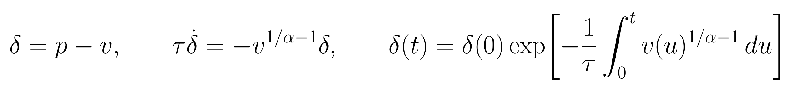
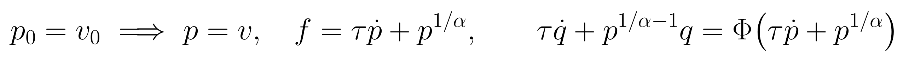
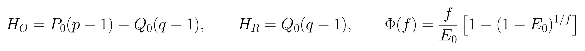
f、v、p、q分别为相对静息值归一的流量、血容量、总Hb和去氧Hb；τ为秒，α、E0无量纲，P0/Q0是模型坐标的基线尺度。p−v在v>0、τ>0时保持初始符号且绝对值不增加；近静息、τ=2秒时，30秒后初差只剩初值约0.00000031。
上式相容关系仅在p0=v0时直接适用；独立p0和v0须保留上述衰减项。因此本轮主拟合始终释放五个初态，并另做绑定初态的线性对照。
Hb内部约束不含上游驱动r、β、κ、γ，单纯增加r的灵活性不能消除违反该约束的目标。但独立血管状态创新、参数随时间变化或额外观测室会改变这个结论。本报告讨论当前确定性共享驱动路径，不能直接外推到仓库旧版具有血管过程噪声的滤波器。
实现：src/inference/t3a_balloon_robust_ssm.py 的 balloon_rhs 与 observation_map；src/inference/shared_driver_reconstruction.py 的无血管逐点创新拟合。
这是针对性原始文献核查，不是量化“多少比例模型存在此问题”的系统综述。确定性单输入血管核心常见此类限制；完整测量模型可能已加入补偿项。
Dynamic causal modelling for functional near-infrared spectroscopy
神经活动驱动血流，再生成血容量与两种Hb。文章明确用8–12秒周期的DCT混杂项及常数项描述Mayer波和基线，并讨论加入血压、CO2及短距通道观测。
与当前问题的边界：论文印出的p方程保持p/v，仓库入口平衡变体使p-v衰减；两者在p0=v0时一致。完整DCM的混杂观测模型不能等同于本次纯共享驱动基线。
建立联合EEG–fNIRS状态空间模型，用粒子滤波估计模拟的电与血流动力状态。是本项目模型家族的相关实例。
与当前问题的边界：该文主要为模拟研究；不能用摘要判定全部状态的过程噪声秩，也不能声称其原始随机模型严格满足本仓库的确定性Hb约束。
明确将血容量、流速和氧提取/代谢作为独立变量建模，并区分血容量与流速/代谢对HbO、HbR和HbT振荡的贡献。
与当前问题的边界：这是不同的血管室建模选择，不是对当前数据已经鉴定出独立血容量来源的证明。
尤其需要区分方程版本：Tak论文印出的总Hb方程保持p/v为常数，当前仓库变体使p−v衰减。二者均未通过独立初态创造持续独立输入，但数学不变量不同。
这是针对性原始文献核查，不是量化“多少比例模型存在此问题”的系统综述。确定性单输入血管核心常见此类限制；完整测量模型可能已加入补偿项。
Dynamic physiological modeling for functional diffuse optical tomography
状态空间/Kalman建模使用血压及心率变异等辅助输入来描述背景生理动态，说明状态空间模型本身可容纳非任务、非单神经驱动过程。
与当前问题的边界：DOT/fNIRS背景生理建模，不能直接当作本项目EEG–fNIRS生理源恢复验收。
短源探距观测配合动态状态空间估计，同时估计响应和系统生理干扰。文章指出系统波动与神经血流响应频谱重叠，单纯频率过滤会损伤响应。
与当前问题的边界：用6名被试静息背景加合成响应验证；额外独立观测是关键，不能由增加任意自由成分替代。
BrainSignals扩展用血压、CO2、血氧和代谢需求驱动脑内过程，并加入并行头皮血管室；其输入变化可产生不同血流与容积响应，模拟显示系统因素能够掩盖或模仿功能激活。
与当前问题的边界：作者同样强调输入相关、噪声及观测不完备会限制来源分离；本次共同成分不能据此直接命名为头皮血流。
State-space models of impulse hemodynamic responses over motor, somatosensory, and visual cortices
从19名被试的平均脉冲响应通过子空间辨识构造状态空间模型；说明SSM也可以是数据驱动响应模型，不必使用Balloon内部相容式。
与当前问题的边界：并非连续双Hb物理源识别，亦不证明两种Hb可以生理上任意独立变化。
检索未找到把本仓库的p−v衰减式与30/90秒实测损失作为同一命题直接检验的文献；这不构成首创性证明。SSM只是一种建模形式，不能据此断言所有EEG–fNIRS SSM都有相同局限。
原模型仅拟合逐时点共享驱动和五个独立初态。额外成分使用30/90秒各6/18个余弦模式，最高频率0.1 Hz，保持每秒自由度密度相同；所有模式先经过与模型相同的观测算子。
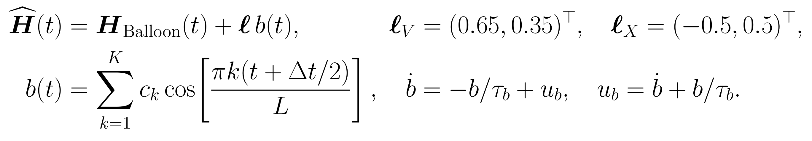
V为共同血容量方向，X为总Hb不变的交换方向。每列按训练SD加权后的Hb RMS归一为1，两个方向使用相同系数先验SD=1。τb=2秒仅是任一拟合b(t)的状态实现，不是已识别的生理时间常数；代码拟合b的系数，没有测得独立输入ub。系数对应有正有负的相对变化，没有对额外血管室做生理资格鉴定。
| 条件 | 模型可见数据 | 评分与用途 |
|---|---|---|
| 联合完整 | 整个窗口EEG、HbO、HbR | 全窗条件重建；原→V为主比较 |
| Hb-only完整 | 整个窗口HbO、HbR | 排除EEG目标妥协后检查内部限制 |
| 联合遮挡 | EEG全可见；每30秒遮住10–15和20–25秒两Hb | 隐藏Hb仅评分；离线分块插值，不是未来预测 |
τ=2秒、κ=0.64、γ=0.32、α=E0=0.32、β=P0=1、Q0=0.35冻结；驱动曲率惩罚0.01，初态惩罚100，log-flow惩罚1。各新增模型从静息和已拟合原模型两起点优化，保留全部终态和梯度。
直接读取已完成公开 output-support 运行20261010_v1及20261013_refed_v2的prepared数组、plan和训练坐标。Single-Trial由光强经保留光学变换获得相对Hb；其他数据集沿用发布Hb及其原单位语义。没有读取新的原始数据、比较协议的保护样本或重拟合归一化。
EEG为原生连续功率特征经训练PCA的标量代理；Hb为不重叠原生时间bin均值，没有新增双向Hb滤波。时间网格0.25秒。30秒取90秒的中段，每个长度重设前5秒的可见参考；它是数值参考，不是静息或生理初态假设。
裁窗后检查完整观测算子在窗外的依赖确实相消；最后一个bin因需要窗外模型插值支持而排除。30秒使用119个评分bin，90秒359个；共同中间区间都是原记录30到59.5秒的119个点。
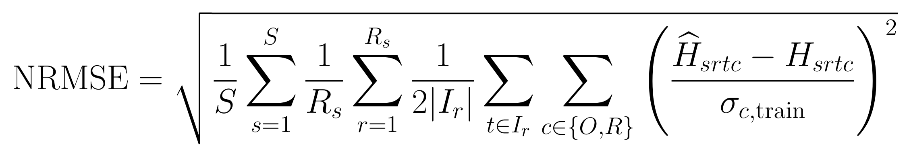
σ为父运行训练SD，全实验固定；S为独立被试数，Rs为被试内记录数，Ir为该终点的评分点。不能把时间点、两条记录或两种长度当作独立被试。绝对收益为原模型NRMSE减候选NRMSE，百分比再除以原模型NRMSE；各表均先聚合均方再开方。
完整拟合有更多自由度时误差自然可下降，所以同时保留等容量X、Hb-only、隐藏块及已知真值合成。10%相对RMSE下降只作为描述性重要程度，不是确认性检验阈值。置信区间整块bootstrap被试2000次，保留同人的两条记录；没有修正多重比较。
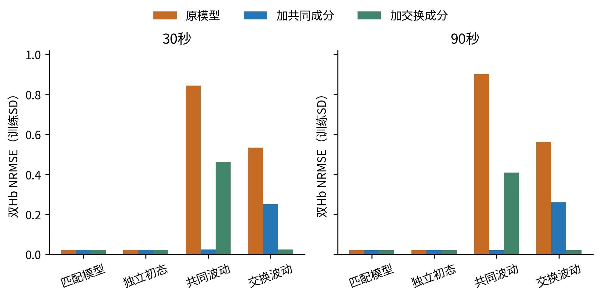
每柱汇总6个生成seed；先seed内均方、再seed等权开方。已知真值只用于生成和评分，未用于拟合初值。
共144个条件任务、432个非线性拟合，全部收敛。共同真值下，V将30/90秒误差从0.844/0.902降至0.025/0.021；交换真值下，X降至0.025/0.021，V仍为0.251/0.260。匹配模型与非静息初态条件下原模型约0.02，未出现大幅虚假收益。
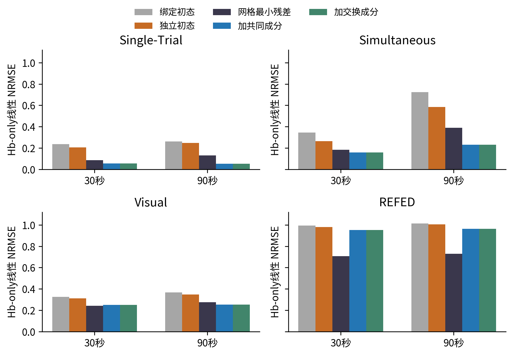
每数据集12条记录、6名被试；相同目标、无正则最小残差。网格在每窗口选择最优tau/alpha/E0，仅作对原模型有利的表达能力上界检查。
独立初态优于绑定初态，但没有消除持续残差。额外V与X在线性Hb-only中几乎等效，提示单凭两个Hb的全窗拟合无法唯一归属额外方向。两个SVD截断1e−10与1e−12给出的误差相同。
线性最小二乘允许非物理状态：最大相对状态偏离约15972.3。这些数值只说明保留线性子空间的最小残差，不是可实现的生理估计或全局非线性不可能性证明。
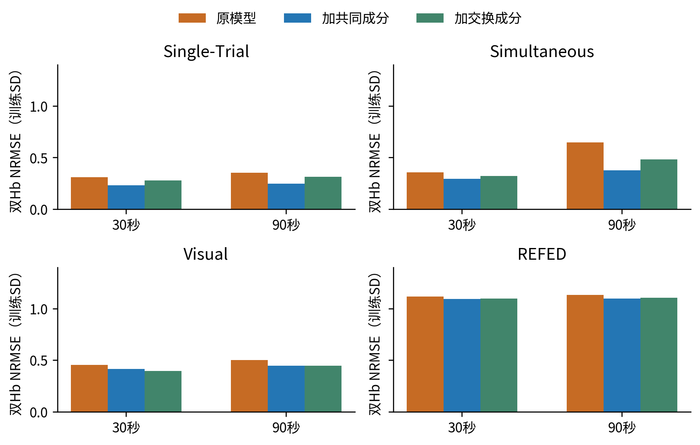
全部柱采用统一纵轴，12/12记录、6名被试进入每个比较；所有实测拟合均通过数值检查。颜色与其他图一致。
| 数据集 | 秒 | 原→共同 | 相对下降 | 绝对下降 [95%区间] |
|---|---|---|---|---|
| Single-Trial | 30 | 0.309 → 0.231 | 25.4% | 0.079 [0.020, 0.142] |
| Single-Trial | 90 | 0.352 → 0.248 | 29.8% | 0.105 [0.036, 0.175] |
| Simultaneous | 30 | 0.358 → 0.292 | 18.4% | 0.066 [0.051, 0.087] |
| Simultaneous | 90 | 0.645 → 0.375 | 41.9% | 0.270 [0.217, 0.335] |
| Visual | 30 | 0.453 → 0.415 | 8.4% | 0.038 [0.015, 0.081] |
| Visual | 90 | 0.501 → 0.445 | 11.3% | 0.057 [0.032, 0.092] |
| REFED | 30 | 1.117 → 1.094 | 2.0% | 0.023 [0.013, 0.030] |
| REFED | 90 | 1.132 → 1.097 | 3.2% | 0.036 [0.016, 0.056] |
V在Single-Trial与Simultaneous优于X；Visual的30秒样本中X的平均拟合更好，V并非普适正确方向。REFED整体变化小，另见频带诊断。
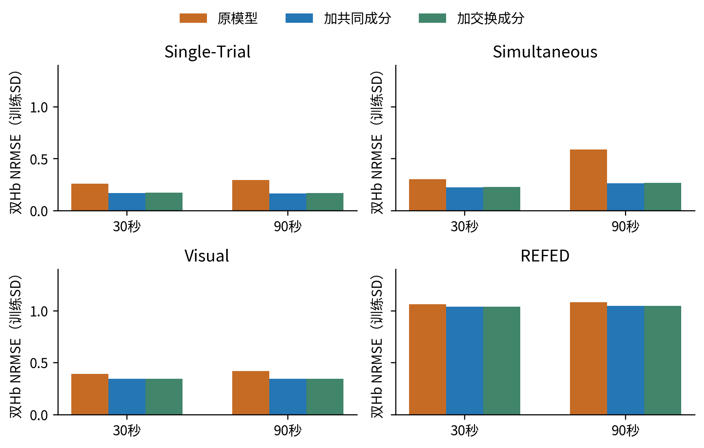
全部柱采用统一纵轴，12/12记录、6名被试进入每个比较；所有实测拟合均通过数值检查。颜色与其他图一致。
| 数据集 | 秒 | 原→共同 | 相对下降 | 绝对下降 [95%区间] |
|---|---|---|---|---|
| Single-Trial | 30 | 0.259 → 0.170 | 34.6% | 0.090 [0.022, 0.160] |
| Single-Trial | 90 | 0.292 → 0.166 | 43.2% | 0.126 [0.047, 0.201] |
| Simultaneous | 30 | 0.303 → 0.223 | 26.4% | 0.080 [0.061, 0.106] |
| Simultaneous | 90 | 0.588 → 0.263 | 55.2% | 0.324 [0.244, 0.435] |
| Visual | 30 | 0.393 → 0.344 | 12.5% | 0.049 [0.014, 0.135] |
| Visual | 90 | 0.419 → 0.344 | 17.8% | 0.075 [0.034, 0.154] |
| REFED | 30 | 1.063 → 1.038 | 2.3% | 0.025 [0.016, 0.032] |
| REFED | 90 | 1.083 → 1.045 | 3.6% | 0.039 [0.017, 0.061] |
Single-Trial与Simultaneous的改善没有随着移除EEG目标而消失，支持Hb内部动态限制确实贡献了误差；本对照仍保留相同的初态、驱动与flow工程惩罚。
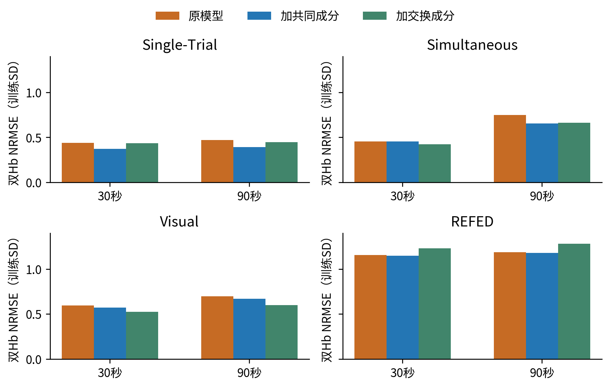
全部柱采用统一纵轴，12/12记录、6名被试进入每个比较；所有实测拟合均通过数值检查。颜色与其他图一致。
| 数据集 | 秒 | 原→共同 | 相对下降 | 绝对下降 [95%区间] |
|---|---|---|---|---|
| Single-Trial | 30 | 0.437 → 0.374 | 14.5% | 0.063 [0.013, 0.136] |
| Single-Trial | 90 | 0.468 → 0.393 | 16.1% | 0.075 [0.022, 0.144] |
| Simultaneous | 30 | 0.453 → 0.453 | -0.0% | -0.000 [-0.016, 0.012] |
| Simultaneous | 90 | 0.749 → 0.655 | 12.5% | 0.093 [-0.033, 0.204] |
| Visual | 30 | 0.597 → 0.572 | 4.2% | 0.025 [-0.018, 0.079] |
| Visual | 90 | 0.695 → 0.668 | 3.9% | 0.027 [0.012, 0.043] |
| REFED | 30 | 1.156 → 1.148 | 0.7% | 0.008 [0.000, 0.021] |
| REFED | 90 | 1.190 → 1.179 | 0.9% | 0.011 [-0.002, 0.023] |
Single-Trial两种长度的V收益区间均高于零；Simultaneous 30秒没有收益，90秒虽平均改善12.5%，区间跨零。Visual与REFED收益较小或不确定。各时间段在同一记录内拟合，不能称跨记录预测。
下表只评分原记录中间同一119个时间点，并去除每个Hb的残差均值以排除不同参考的常量差；训练SD保持不变。30秒拟合只看该段，90秒拟合还受到前后30秒数据的约束。
| 数据集 | 拟合支持/秒 | 相同中段形状误差：原→共同 | 相对下降 |
|---|---|---|---|
| Single-Trial | 30 | 0.309 → 0.231 | 25.4% |
| Single-Trial | 90 | 0.326 → 0.237 | 27.1% |
| Simultaneous | 30 | 0.357 → 0.292 | 18.3% |
| Simultaneous | 90 | 0.404 → 0.301 | 25.3% |
| Visual | 30 | 0.453 → 0.415 | 8.4% |
| Visual | 90 | 0.469 → 0.429 | 8.6% |
| REFED | 30 | 1.116 → 1.094 | 2.0% |
| REFED | 90 | 1.132 → 1.102 | 2.7% |
Simultaneous的同区间收益为18.3%和25.3%，而90秒全窗为41.9%；因此长窗全体更难还包含额外时间段的影响。更长支持确实强化了部分残差限制，但本轮不把这一差异视为纯粹、普适的时长因果效应。
| 数据集 | 秒 | 差值 [95%被试bootstrap区间] |
|---|---|---|
| Single-Trial | 30 | 0.046 [0.007, 0.085] |
| Single-Trial | 90 | 0.067 [0.025, 0.098] |
| Simultaneous | 30 | 0.029 [0.016, 0.044] |
| Simultaneous | 90 | 0.108 [0.084, 0.129] |
| Visual | 30 | -0.020 [-0.070, 0.002] |
| Visual | 90 | 0.001 [-0.047, 0.035] |
| REFED | 30 | 0.002 [-0.005, 0.007] |
| REFED | 90 | 0.009 [0.005, 0.013] |
正数表示V更好。Single-Trial与Simultaneous有较一致的共同方向优势；Visual区间跨零。这个对照增加方向证据，仍不能识别脑内/头皮来源或排除观测映射误差。
在固定评分支持上对训练SD标准化残差作正交DCT，累计频率中心位于1/30至0.1 Hz的平方系数，再除以原时间点数和两个Hb分量数、开方。这是该频带对全窗误差的RMS贡献，不是逐频带重新归一化，也不是相关系数。30秒支持包含约1–3个周期，90秒约3–9个周期；离散频点随时长变化。
| 数据集 | 秒 | 波动频带误差：原→共同 | 该频带相对下降 | 基线残差能量中的频带比例 |
|---|---|---|---|---|
| Single-Trial | 30 | 0.179 → 0.097 | 45.8% | 33.4% |
| Single-Trial | 90 | 0.182 → 0.113 | 37.6% | 26.6% |
| Simultaneous | 30 | 0.186 → 0.098 | 47.4% | 26.9% |
| Simultaneous | 90 | 0.277 → 0.118 | 57.4% | 18.4% |
| Visual | 30 | 0.201 → 0.140 | 30.2% | 19.6% |
| Visual | 90 | 0.251 → 0.189 | 24.4% | 25.0% |
| REFED | 30 | 0.216 → 0.109 | 49.4% | 3.7% |
| REFED | 90 | 0.198 → 0.117 | 41.0% | 3.0% |
REFED的这一频带残差下降约41%–49%，但该频带只占其基线总残差能量的约3%–4%，所以全窗RMSE仅下降2%–3%。这支持“对慢波动有影响”与“不是总误差主要来源”可以同时成立；未测得的高频、噪声或其他失配不能在本轮作唯一归因。
Single-Trial与Simultaneous在此频带的改善较明显，与下一组保留波形对应。该频带是预先固定的描述终点，不按结果选择频率，也不把时间点当作独立重复。
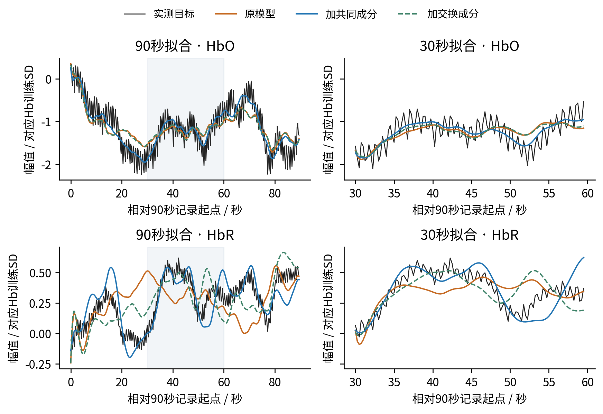
黑线为处理后实测目标，橙/蓝/绿分别为完整模型预测；额外成分已包含在蓝/绿线中。阴影为相同中间30秒，30秒输出加回参考差后显示在相同坐标。每行两图同刻度，不同数据集独立纵轴。
30秒双Hb误差：原模型0.224，共同0.180，交换0.215。 90秒双Hb误差：原模型0.303，共同0.209，交换0.276。
样例为12条记录中按90秒基线误差排序的第7条（偶数分母的上中位数；并列按身份排序），仅作解释。eeg_fnirs_single_trial__subject_07__prefrontal__r0；任务 motor_imagery；通道 AF7Fp1。完整候选分母与选择规则保存在 figure_sources.json。
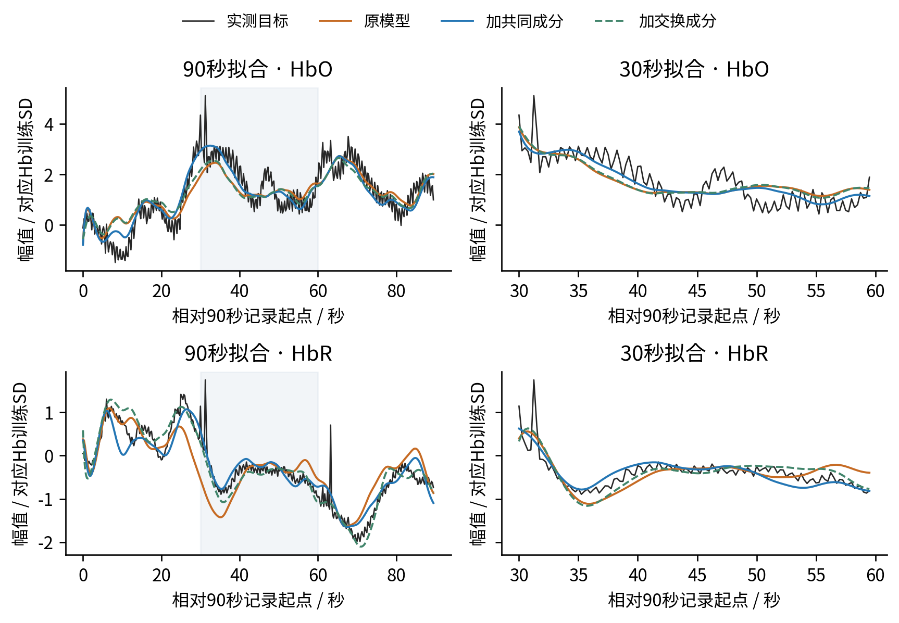
黑线为处理后实测目标，橙/蓝/绿分别为完整模型预测；额外成分已包含在蓝/绿线中。阴影为相同中间30秒，30秒输出加回参考差后显示在相同坐标。每行两图同刻度，不同数据集独立纵轴。
30秒双Hb误差：原模型0.472，共同0.391，交换0.456。 90秒双Hb误差：原模型0.568，共同0.417，交换0.499。
样例为12条记录中按90秒基线误差排序的第7条（偶数分母的上中位数；并列按身份排序），仅作解释。simultaneous_eeg_nirs__VP004__prefrontal__r0；任务 wg；通道 AFp7。完整候选分母与选择规则保存在 figure_sources.json。
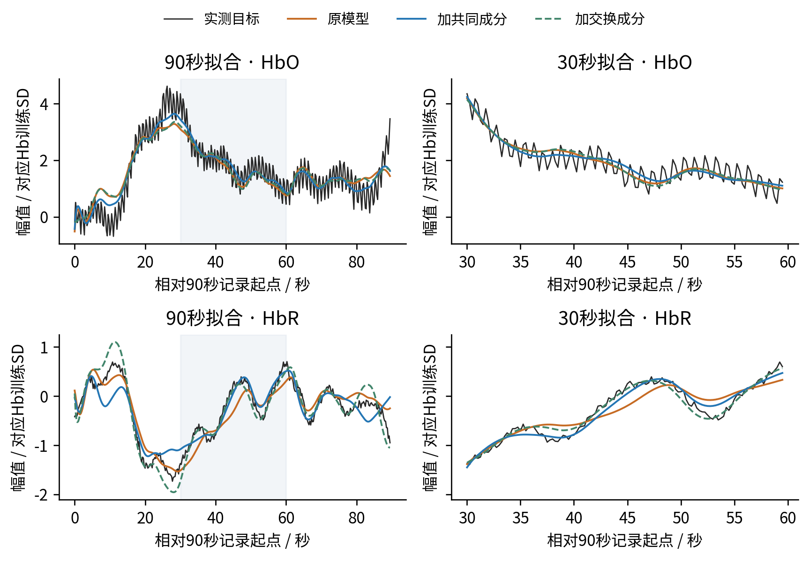
黑线为处理后实测目标，橙/蓝/绿分别为完整模型预测；额外成分已包含在蓝/绿线中。阴影为相同中间30秒，30秒输出加回参考差后显示在相同坐标。每行两图同刻度，不同数据集独立纵轴。
30秒双Hb误差：原模型0.286，共同0.256，交换0.256。 90秒双Hb误差：原模型0.422，共同0.365，交换0.408。
样例为12条记录中按90秒基线误差排序的第7条（偶数分母的上中位数；并列按身份排序），仅作解释。visual_cognitive_motivation__S08__prefrontal__montage0__r0；任务 visual_cognitive_motivation；通道 CH7。完整候选分母与选择规则保存在 figure_sources.json。
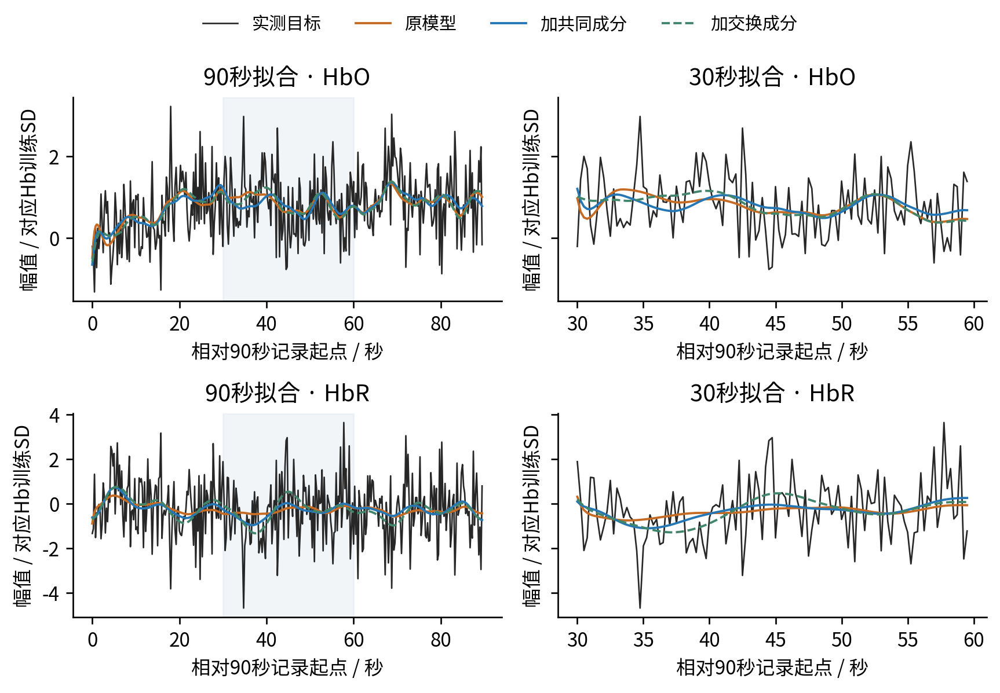
黑线为处理后实测目标，橙/蓝/绿分别为完整模型预测；额外成分已包含在蓝/绿线中。阴影为相同中间30秒，30秒输出加回参考差后显示在相同坐标。每行两图同刻度，不同数据集独立纵轴。
30秒双Hb误差：原模型1.088，共同1.069，交换1.054。 90秒双Hb误差：原模型1.059，共同1.042，交换1.036。
样例为12条记录中按90秒基线误差排序的第7条（偶数分母的上中位数；并列按身份排序），仅作解释。refed__14__prefrontal__r0；任务 emotion_video；通道 CH49。完整候选分母与选择规则保存在 figure_sources.json。
本轮支持：独立p0、v0只提供衰减初态模式；当前确定性单驱动模型缺少持续独立共同方向。额外共同方向对前两个数据集具有实质性条件重建收益，并能减少固定慢频带残差。Hb-only仍有收益，说明不只是EEG目标之间的折中。
本轮不支持：所有EEG–fNIRS状态空间模型都存在同样限制；所有数据集总误差主要由它导致；拟合出的额外项已被识别为真实脑血容量；或完整窗口拟合收益必然转化为隐藏目标预测。Visual的方向对照未能区分V与X，REFED总体收益小，部分遮挡区间跨零。
下一步由这些结果支持的改动是：保留单驱动神经血流核心，同时把独立共同血流/观测过程作为显式候选；采用短距通道或已测系统生理输入来限制它，再做跨记录泛化与来源归属。应分别检验观测增益与额外室动力学，避免把共享项吸收的误差直接当作生理恢复。本轮没有自动启动新的昂贵训练、原始数据生产或受保护评价。
| 复核项目 | 结果 |
|---|---|
| 实测/合成非线性拟合 | 864/864 与 432/432 均收敛并通过积分检查 |
| 实测误差独立重算最大差 | 4.44e-16 |
| 物理预测+额外项闭合最大差 | 2.78e-17 |
| 4/8子步最大预测差 / 训练SD | 6.15e-05；预定阈值0.005 |
| 初差衰减、隐藏mask、观测闭合 | 逐实测解全部通过 |
| 运行资源 | 36个单数值线程worker；user systemd与linger；源快照、命令、日志保留 |
| 图与公式 | PNG 240/300 dpi；正文与表格可搜索；WPS实际操作未检验 |
证据根：/SSD_2/pid-mcm-implementation/experiments/runs/physiology_semantic_tokenizer/shared_driver_reconstruction/20261022_volume_drive_v1。主结果由summary.json与逐任务JSON/NPZ持有；本导出的analysis.json仅持有共同中段与V/X配对补充统计。源码在source_snapshot，资源在resources.json，七篇原始文献及核验边界在literature.json。